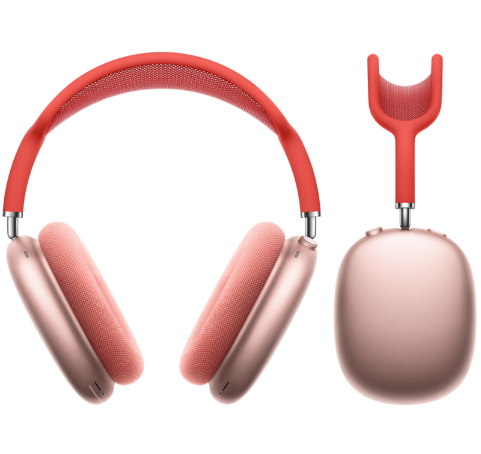
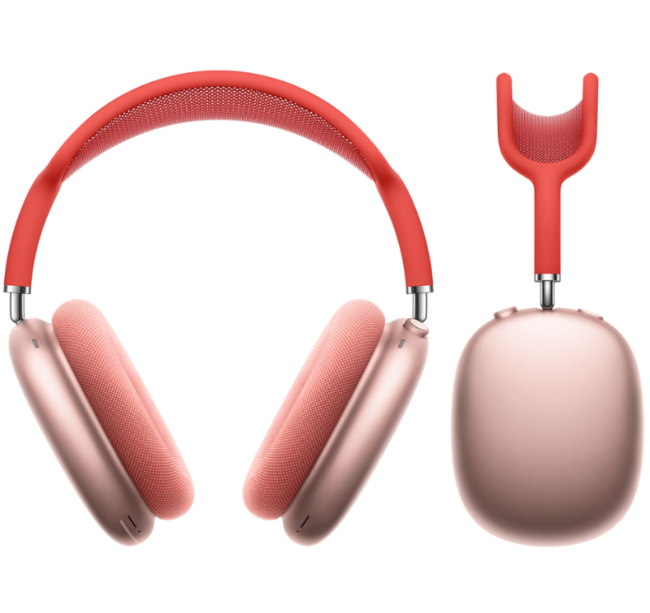
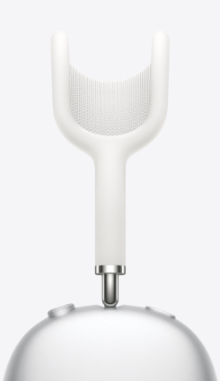
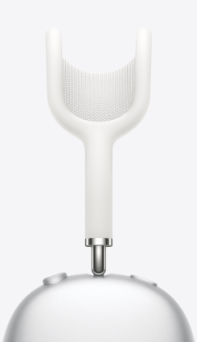
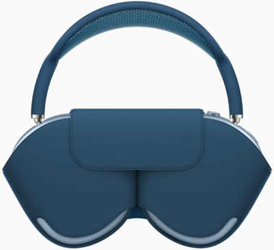
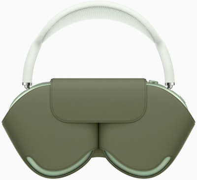
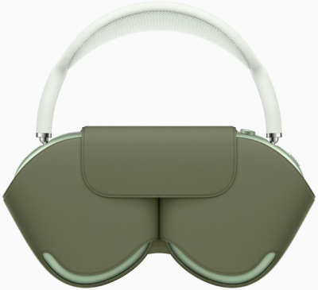

Choose your color
The perfect balance between the purityof hi‑fi and the magic of AirPods. The ultimate personal audio experience.
An extremely original composition.
Introducing the reinvention of over-the-ear headphones. From the cushion to the headband, the AirPods Max are designed with acoustic insulation in mind, adapted to many head shapes, so you can immerse yourself in the purity of sound.
The headband is made of breathable mesh, distributing the weight to reduce pressure on the head.
The stainless steel structure is wrapped in a soft-touch material to provide a remarkable harmony between resistance, flexibility and comfort.
The telescoping arms expand and stay in any position you want, allowing you to maintain fit and isolation.


 

It even preserves the battery.
When stored in the sleek and lightweight Smart Case , AirPods Max enter a low-power state to save energy.

 


Stayin' alive, stayin' alive.
20
hours of music, movies and calls with Active Noise Cancellation and Custom Spatial Audio turned on. 5 And just 5 minutes of charging via the Lightning connector gives you an hour and a half of sound. 6
Custom Spatial Audio with dynamic head tracking provides a surround sound experience worthy of a movie theater.
Through built-in gyroscopes and accelerometers, AirPods Max and your iPhone, iPad, Mac or Apple TV detect the slightest head movements and keep the sound steady on your device.
And with Apple Music, custom Spatial Audio with dynamic head tracking creates a unique three-dimensional listening experience.